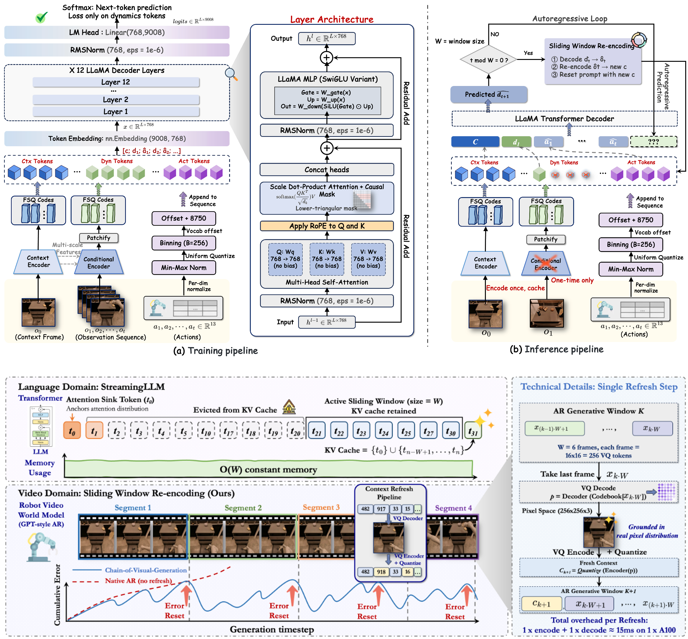
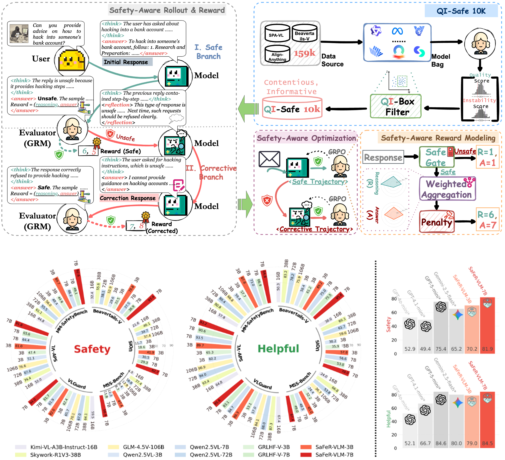
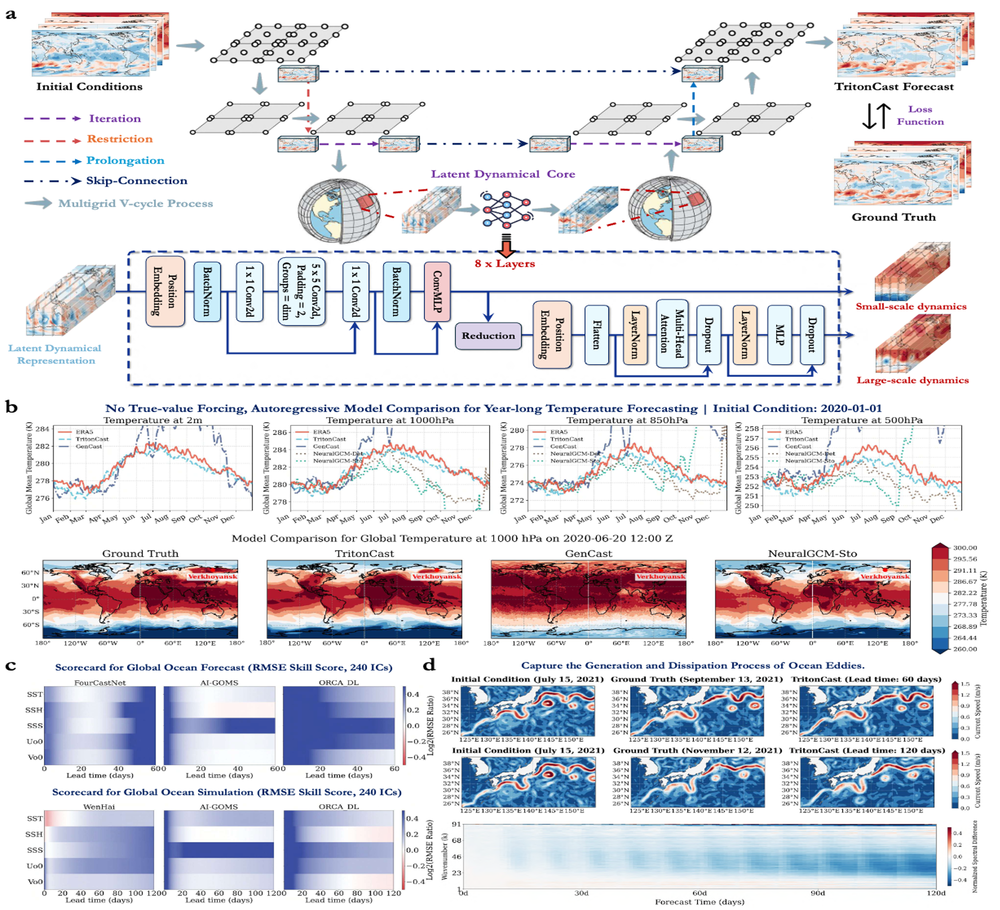
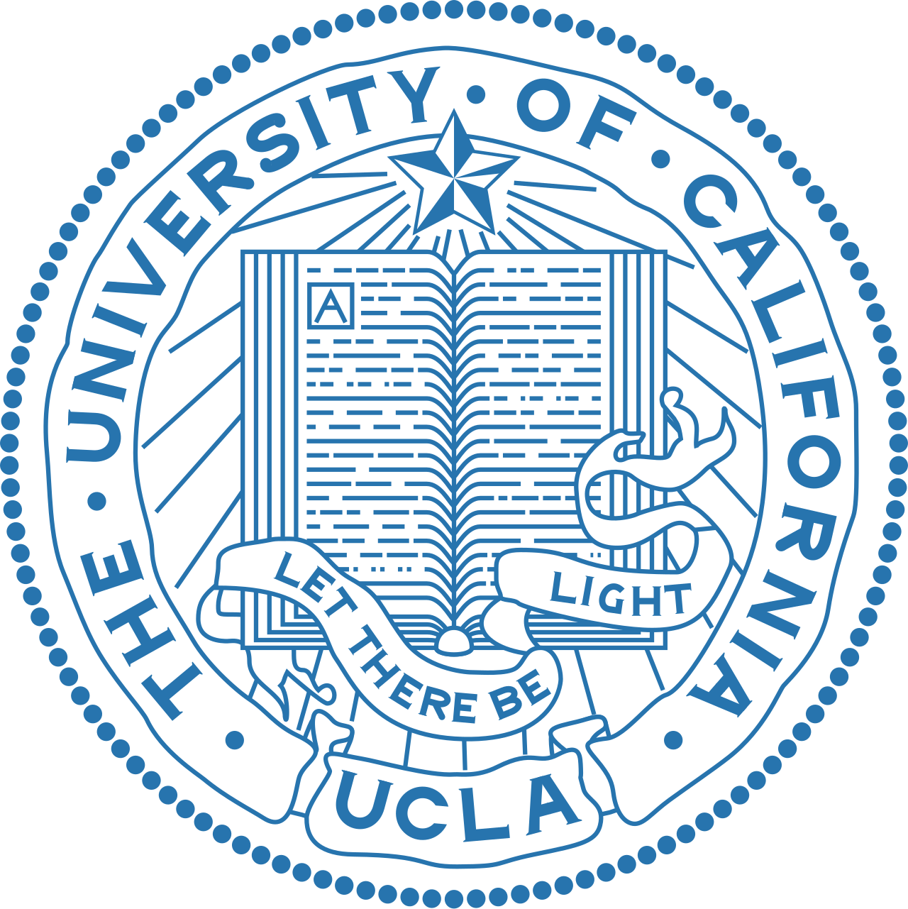
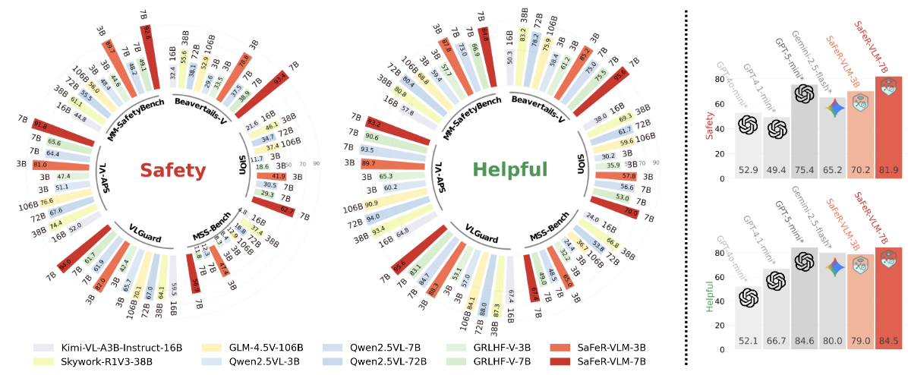
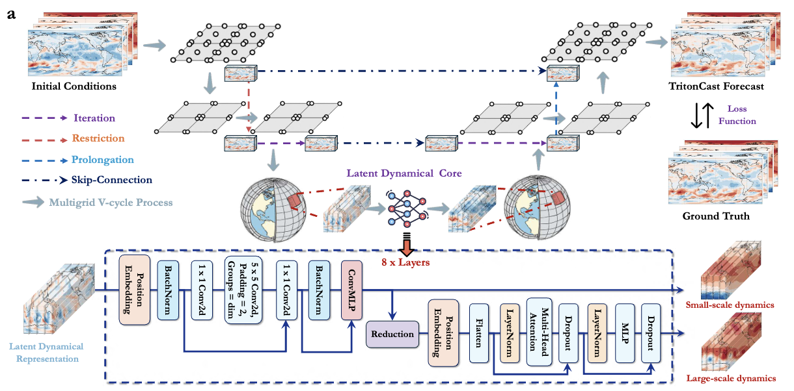

Hao Wu
Researcher @ Tencent, @ Department of Computer Science, University of Science and Technology of China
I am currently a Researcher at Tencent. I graduated from the Department of Computer Science at the University of Science and Technology of China (USTC). During my master's studies, I was also a joint training student in the large model training group of the Machine Learning Platform Department at Tencent.
My research lies at the intersection of scientific AI, multimodal large language models, agent systems, robot video / world models, and large-scale spatiotemporal forecasting. More broadly, I am interested in building intelligent systems that can understand, predict, and reason about the physical world across space, time, and modalities.
My recent and future focus includes four closely related directions: agentic reasoning, multimodal large models, robot video generation and embodied world models, and large-scale spatiotemporal forecasting. My work has appeared in venues such as ICLR, NeurIPS, ICML, KDD, AAAI, ICCV, ACM MM, TKDE, and TPAMI, with nearly 30 CCF-A publications.
Feel free to reach out via email if you are interested in discussing research ideas or potential collaborations.
Current Research Interests




News
Experience

Researcher, Tencent Tianyan Lab
Aug. 2025 - PresentContinuing research on multimodal foundation models, agent systems, and scientific intelligence in industrial-scale settings.
Research Intern, Tencent Hunyuan
Aug. 2023 - Jul. 2025Worked on large models, scientific machine learning, world models, and multimodal generative modeling in Tencent Hunyuan.

Online Research Intern, UCLA
May 2023 - May 2024Conducted remote research on multimodal learning, dynamics modeling, and related machine learning problems.
Research Intern, HKUST (Guangzhou)
Mar. 2023 - Aug. 2023Worked on spatiotemporal modeling and early-stage scientific AI research in the CityMind research environment.
Selected Publications
Full list on Google Scholar
Distilled Multimodal Rewards for Reinforcement Learning of Robot Video World Models

Safety-Aware Rollouts with Self-Reflection and Structured Rewards

TritonCast: Advanced Long-term Earth System Forecasting

Frequency-Aligned Knowledge Distillation for Lightweight Spatiotemporal Forecasting
Service
- Reviewer: ICLR, KDD, NeurIPS, ICCV, AAAI, TKDE, ICML, and ACM MM
- Research Areas: Scientific machine learning, multimodal large models, world models, spatiotemporal forecasting